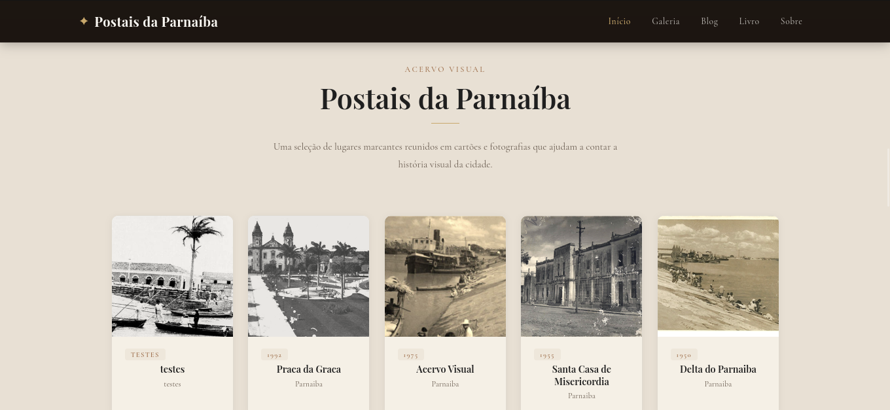
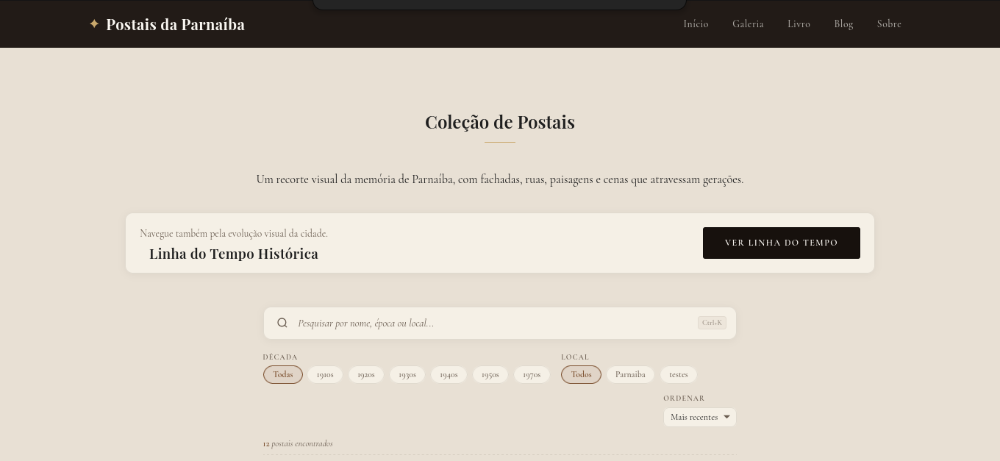
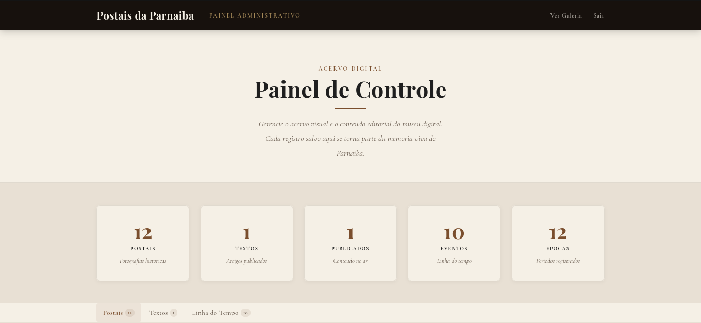

Postais da Parnaíba
Contexto e problema
Experiência editorial para preservar e apresentar a memória histórica de Parnaíba: conteúdo, imagens e narrativas em uma leitura navegável.
O que construí
- Site multipágina com conteúdo editorial e acervo visual
- Slider, comparador antes/depois, galeria, posts e timeline com dados da API
- Painel para CRUD e upload; backend FastAPI com autenticação e persistência
Ponto técnico
O código em POSTAISCOMPLETO reúne frontend e backend. Nginx serve o site e encaminha /api à API FastAPI; os dados usam modelos SQLAlchemy e PostgreSQL configurado no Compose.
Stack
- HTML
- CSS
- JavaScript
- FastAPI
- SQLAlchemy
- PostgreSQL
- Nginx
Case técnico completo / 01
Integração em evolução
Da narrativa editorial ao contrato HTTP
Problema
Organizar conteúdo histórico, imagens e narrativas de Parnaíba em uma experiência navegável, preservando a leitura editorial e preparando coleções para gestão dinâmica.
Solução construída
Frontend multipágina com conteúdo editorial local, clientes HTTP para coleções públicas e painel administrativo. O backend implementa rotas FastAPI, autenticação JWT, upload e modelos de dados.
Fluxo principal
Do navegador aos dados
- 01Navegadorabre site ou painel
- 02Nginxserve páginas e encaminha /api
- 03FastAPIvalida e atende as rotas
- 04SQLAlchemymapeia o conteúdo no banco
Stack em contexto
Tecnologia com responsabilidade
- HTML + CSS
- Conteúdo editorial, páginas e sistema visual responsivo.
- JavaScript
- Interações, normalização de dados e montagem de coleções.
- Fetch API
- Contrato com postais, crônicas, timeline, autenticação e upload.
- localStorage
- Persistência do token usado pelo cliente administrativo.
- FastAPI + Pydantic
- Rotas públicas, administração e validação dos dados.
- SQLAlchemy + PostgreSQL
- Modelos e persistência configurada para o conteúdo.
- Nginx + Compose
- Entrada HTTP e serviços declarados para site, API e banco.
Decisões técnicas
Escolhas observadas no código
- Conteúdo editorial permanece disponível sem depender da API.
- CSS separado em base, layout, componentes e páginas.
- Cliente administrativo compartilha um helper HTTP com Bearer token.
- Textos dinâmicos públicos passam por escaping antes do HTML.
- Rotas de escrita exigem um administrador autenticado por JWT.
Desafios atuais
O que ainda limita a entrega
- O Nginx de produção aponta o proxy para
app:8000, enquanto o serviço no Compose se chamaprod. - A operação integrada em produção ainda não foi verificada nesta revisão.
- Conteúdo estático e dinâmico ainda não compartilham uma fonte única.
Evidências
Onde verificar
Postais-da-Parnaiba/js/galeria.jscoleções públicasPostais-da-Parnaiba/admin/app.jsauth, CRUD e uploadBackend-Postais_da_Parnaiba/app/main.pyAPI e rotasBackend-Postais_da_Parnaiba/app/models/modelos de dadosBackend-Postais_da_Parnaiba/docker-compose.ymlserviços declarados